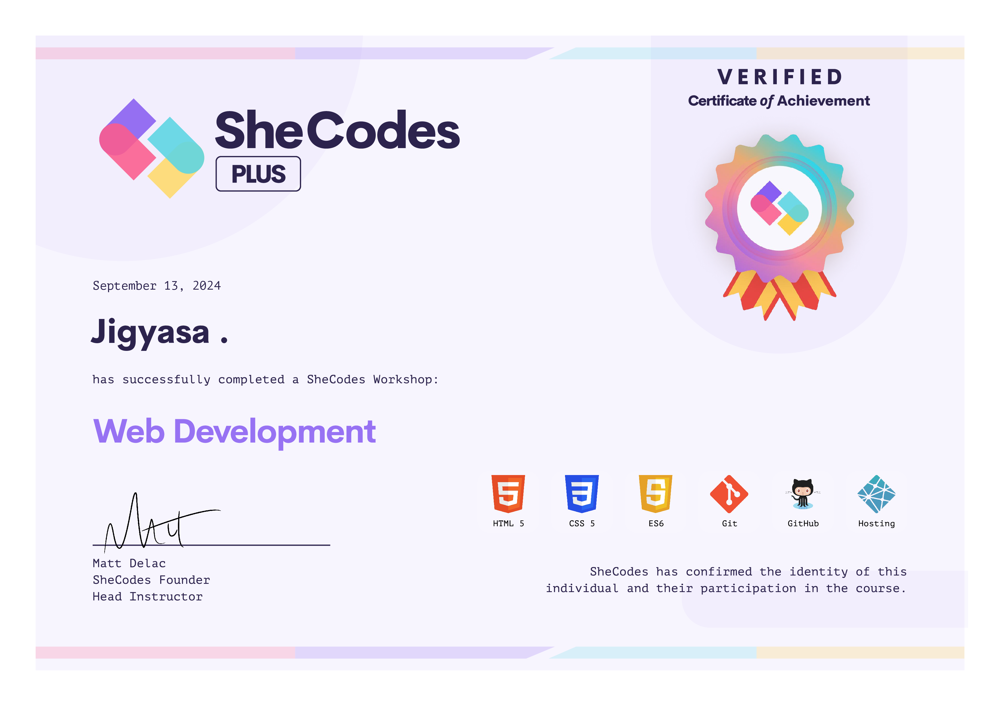

Virtual Internship Programme
Virtual Internship Experience
Details about my virtual internship experience.
Bank of America Global Markets Sales and Trading Analyst
I completed a job simulation in the sales and trading division, where I analyzed market trends using Excel and Bloomberg to provide client-centric solutions. My work involved conducting in-depth data analysis, recommending strategies to optimize trade execution and workflow efficiency, and developing a tailored client proposal focused on investment strategies like portfolio diversification and sustainable growth.
JPMorgan Chase & Co. Quantitative Research
I completed JPMorgan Chase & Co.'s Quantitative Research on Forage, where I engaged in a simulation focused on quantitative research methods. I analyzed a loan portfolio to estimate customer default probabilities and utilized dynamic programming to convert FICO scores into categorical data for predictive modeling of defaults.
Accenture North America Data Analytics and Visualization
I completed Accenture North America's Data Analytics and Visualization simulation on Forage, where I acted as a Data Analyst advising a hypothetical social media client. I cleaned, modeled, and analyzed seven datasets to uncover insights into content trends, and I prepared a PowerPoint deck and video presentation to communicate key findings to the client and internal stakeholders.
J.P. Morgan Software Engineering
I completed J.P. Morgan's Software Engineering simulation on Forage, where I established a local development environment by downloading the necessary files, tools, and dependencies. I also fixed broken files in the repository to ensure the web application functioned correctly. Additionally, I utilized J.P. Morgan Chase’s open-source library, Perspective, to create a live graph that effectively displays a data feed for traders, enhancing visual clarity and usability.
Walmart USA Advanced Software Engineering
I completed Walmart USA's Advanced Software Engineering simulation on Forage, where I addressed complex technical projects for various teams. I developed an innovative heap data structure in Java for the shipping department, designed a UML class diagram for a data processor with multiple operating modes, and created an entity relationship diagram for a new database tailored to Walmart’s pet department requirements.
Goldman Sachs Software Engineering
I completed Goldman Sachs's Software Engineering simulation on Forage as a governance analyst, where I assessed IT security and identified an outdated password hashing algorithm through password cracking with Hashcat. I wrote a memo proposing enhancements to strengthen password protection, including extending minimum password length and adopting a dedicated hashing algorithm.
My Certifications
My Certifications
Here are some certifications I have acquired throughout my career.
GSSOC Extd'24 Mentor
As a mentor in the GirlScript Summer of Code (GSSOC) 2024, I guided aspiring developers in the data domain, helping them enhance their skills and contribute to impactful open-source projects. It was a rewarding experience fostering growth and collaboration in the tech community.
Analytics Participant
This enriching program not only deepened my understanding of Data Analytics but also equipped me with practical skills to tackle real-world problems. I'm grateful for the support from the Consulting and Analytics Club, which made this learning journey both meaningful and enjoyable.
YBEP'24 Finalist
Participated in the Young Barons Elevator Pitch - YBEP 2024, organized by Project Greenbucks, Enactus IGDTUW, where I was among the top 10 finalists! I had the incredible opportunity to pitch my business idea to esteemed judges from all over India. It was a great experience that allowed me to showcase my passion.

SheCodes Basics
As part of the SheCodes Basics course, I developed a vibrant landing page for a yoga platform, honing my foundational web development skills in HTML, CSS, and JavaScript. This project reflects my commitment to creating engaging user experiences while exploring the enriching world of yoga.

SheCodes Basics Add-on
Expanded my web development knowledge by learning advanced CSS techniques, responsive design principles, and enhancing my JavaScript capabilities. This course provided a deeper understanding of web technologies, equipping me to create dynamic and visually appealing websites that adapt seamlessly to various devices.
SheCodes Plus AI
I delved deeper into web development while creating an AI poem generator. This project allowed me to combine my coding skills with artificial intelligence, enabling users to generate unique and creative poems at the click of a button. The experience enriched my understanding of AI integration in web applications.

SheCodes Plus
I developed a weather app that provides real-time weather updates and forecasts. This project not only enhanced my proficiency in JavaScript and API integration but also allowed me to create a user-friendly interface for an engaging user experience. Through building this app, I gained valuable insights into handling data.
SheCodes Plus Add-on
In the SheCodes Plus Add-on course, I developed a world clock generator that allows users to view the current time in various time zones around the world. This project provided me with hands-on experience in JavaScript and date handling, as I implemented functionalities to seamlessly display accurate times based on user-selected locations.
SIH'2024 Pre-Qualifier
I participated in the SIH 2024 Pre-Qualifier, which allowed me to showcase my skills in problem-solving and innovation. During this event, I collaborated with a team to develop solutions for real-world challenges, enhancing my technical abilities and team collaboration experience. This opportunity sharpened my understanding of the importance of teamwork.
Coding Club Content Team
As a member of the content team for my college's coding club, CodeGeeks, for one year, I honed my skills in technical writing, content creation, and digital communication. I collaborated with team members to develop engaging tutorials, articles, and resources that helped foster a supportive learning environment for our community.
Postman API Fundamentals Student Expert
I earned the Postman Student Expert badge by demonstrating proficiency in using Postman for API interactions, including making GET, POST, PATCH, and DELETE requests. Through hands-on experience, I learned to manage query parameters, request bodies, headers, and implement API key authorization, enhancing my ability to integrate APIs effectively into applications for improved functionality.
0
Achievements
0
Projects
0
Mentored Students in GSSOC'24
0
Cups of coffee
More projects on Github
Contact
Contact Me
Below are the details to reach out to me!
Address
Delhi, India